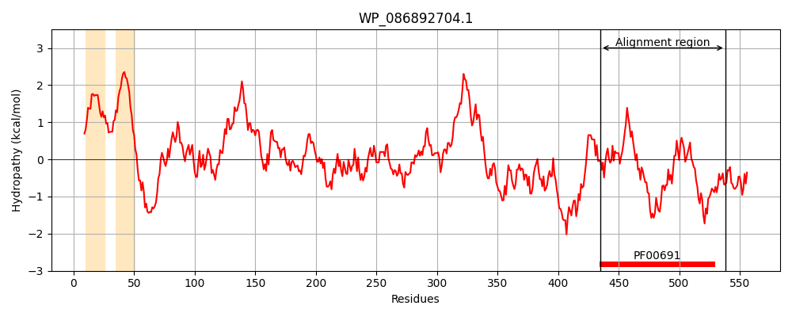
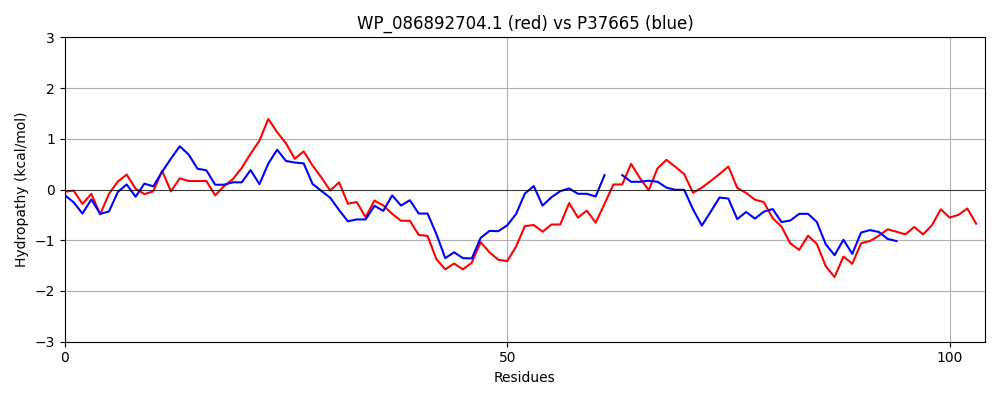

WP_086892704.1
Hit Accession: P37665
Hit TCID: 9.B.186.1.1
Hit Description: gnl|BL_ORD_ID|10127 gnl|TC-DB|P37665|9.B.186.1.1 Probable lipoprotein YiaD OS=Escherichia coli (strain K12) GN=yiaD PE=1 SV=2
Mach Len: 104
e:0.000000
Query TMS Count : 2
Hit TMS Count: 3
TMS-Overlap Score: 0.000000
Predicted Substrates:None
BLAST Alignment:
| Protein Hydropathy Plots: | |
|---|---|
|  |  |
Pairwise Alignment-Hydropathy Plot: | |
|  | |